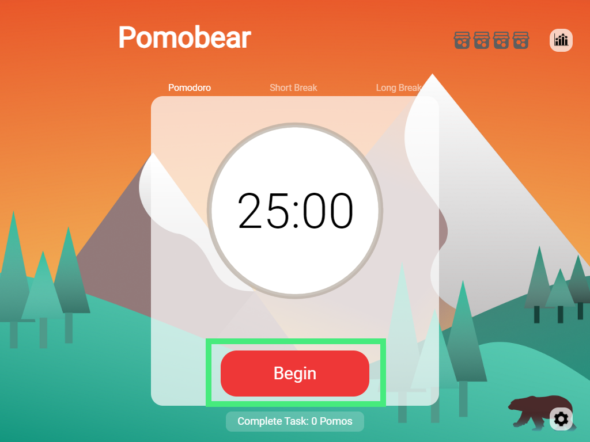
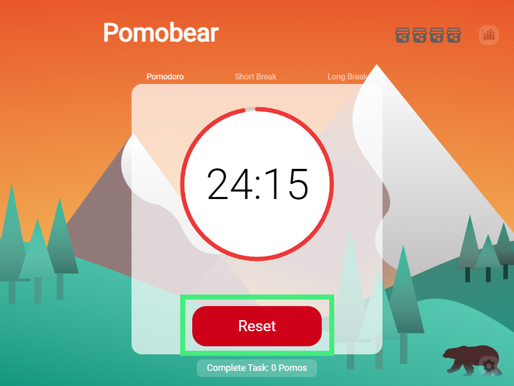
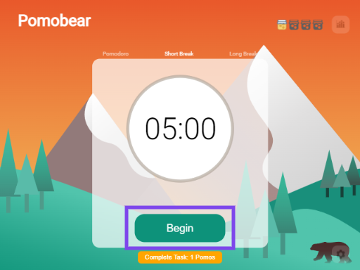
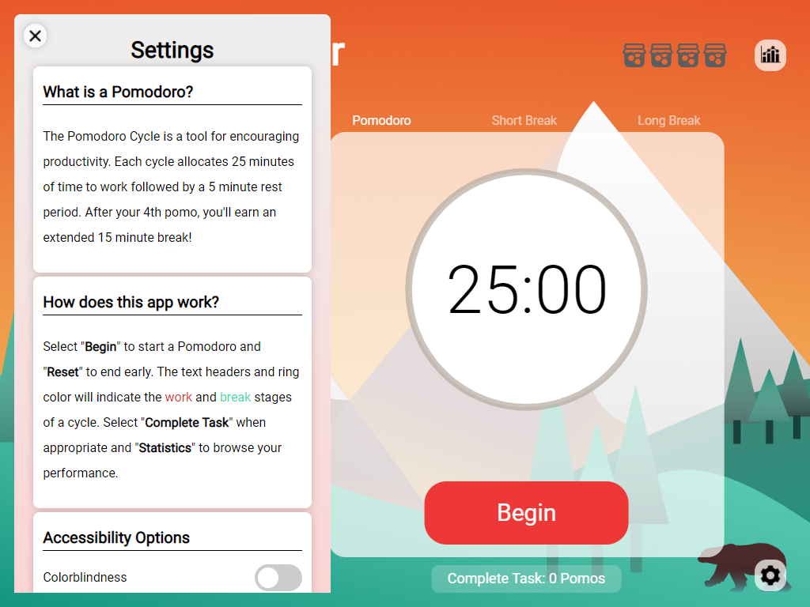
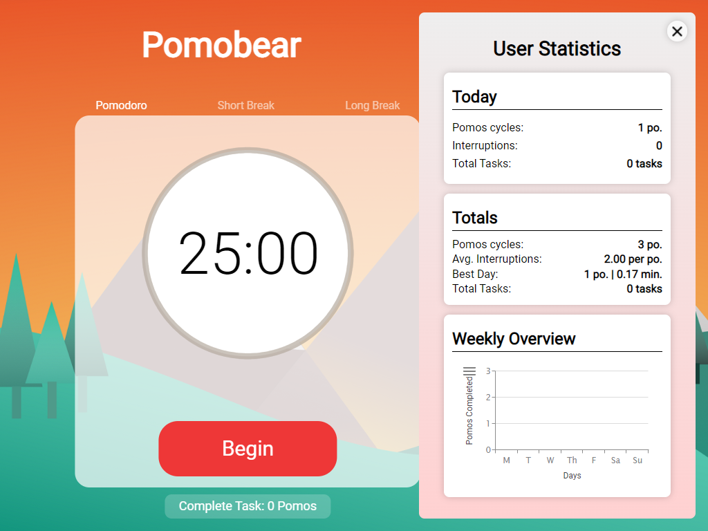

What is a Pomodoro?

The Pomodoro Cycle is a tool for encouraging productivity. Each cycle allocates 25 minutes of time to work followed by a 5 minute rest period. After your 4th pomo, you'll earn an extended 15 minute break!
How to start?

You can start our timer by clicking the "Begin" button.
Start working efficiently!

Once you start the timer, the text headers and ring color will indicate the work and break stages of a cycle. You can also reset the timer by clicking the "Reset" button.
Take a break!

After 25 minutes of work, you can enter a 5-minute break by clicking the "Begin" button. Relaxing in these five minutes will help you work more efficiently in the next cycle.
Settings

You can change the timer setting by clicking the "Settings" icon in the lower left corner.
User Statistics

You can browse your performance by clicking the "Statistics" icon in the upper left corner.